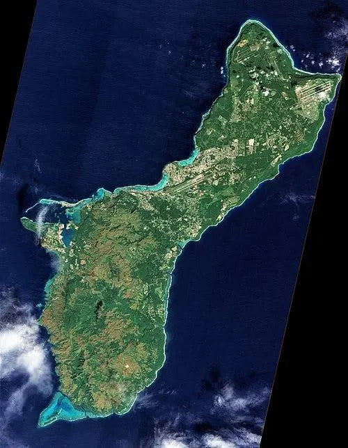
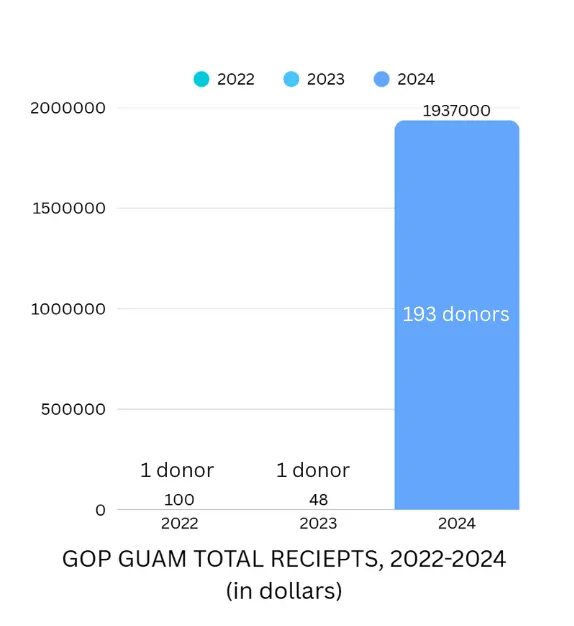
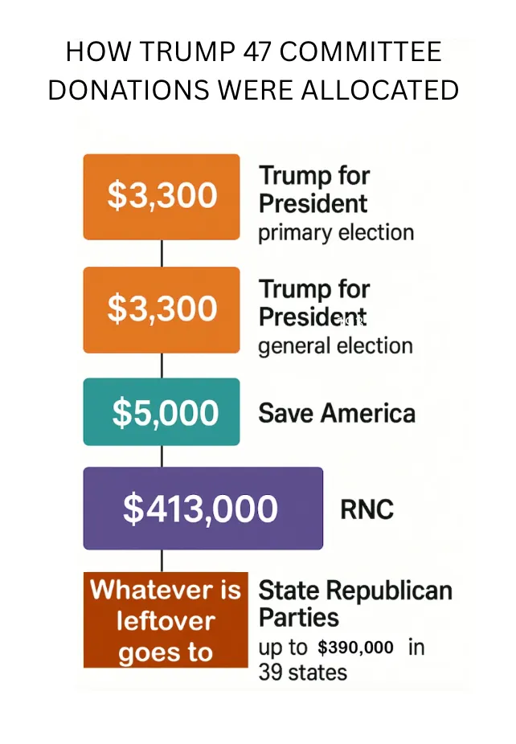
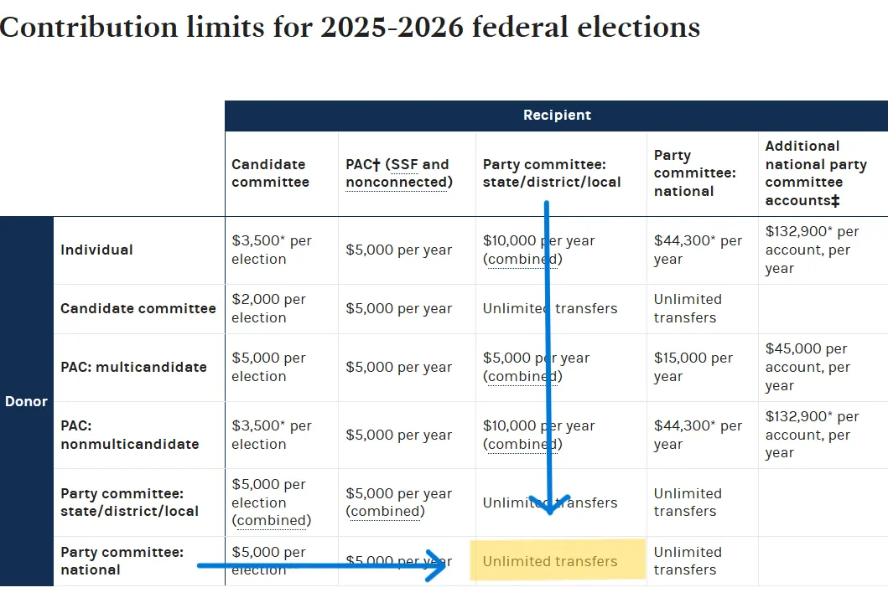
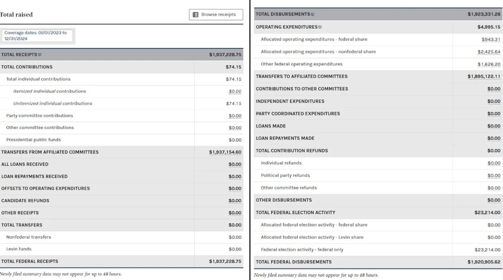

Guam.
Guam.

A U.S. territory in Micronesia that 168,000 people call home.
A World War II battleground in the Western Pacific.
An island known for its warm climate, beautiful beaches, and rich Chamorro culture.
A beach in Guam. Photo by Aljhon Umlas on Unsplash
Turns out Guam also is a paradise for the Republican Party.
Check out this chart:

Fact: The Republican Party of Guam had one donor who gave $48 in 2023.1
Fact: The Republican Party of Guam had 193 donors who gave $1,930,000 in 2024.2
So, in 2024, 193 people donated $10,000 to a political party located 6,000 miles away from the mainland United States on an island that can’t vote for President.
Scroll across the Pacific.
What’s going on here? Why did all these people donate to GOP Guam?
As you probably guessed, it’s not because they wanted a GOP majority on a remote island. Let’s take a deeper dive.
On February 14, 2024, Jamie McCourt – former LA Dodger CEO, high profile divorcee, and Trump mega-fundraiser – donated $10,000 to GOP Guam. (McCourt is an interesting character, check out this podcast).3
McCourt’s was the first of 193 donations of $10,000 to the Republican Party of Guam in 2024. $10,000 is the maximum amount a single person can donate to a state party.4
All of the 193 donors, including McCourt, donated to GOP Guam through “Trump 47 Committee Inc.,” a joint fundraising committee.
Trump 47 Committee Inc. is a joint fundraising committee (JFC) – an entity that facilitates donations to many smaller political committees to fundraise all at once. Think of it as a group tip jar.
Per The Washington Post, the maximum legally allowed donation to the Trump 47 Committee Inc. was $814,600. And here’s how that $814,600 was required to be allocated:

The first $3,300 of any contribution went to Trump’s primary campaign, the next $3,300 went to Trump’s general election campaign, the following $5,000 went to Save America PAC, then up to $413,000 was allocated to the RNC.
Based on the above chart, in order to donate to a state party like GOP Guam through the Trump 47 Committee Inc., you would have to donate the maximum amounts to Trump’s campaign, Save America PAC, and the RNC first. This adds up to $424,600.
Knowing that there was some “other” reason why 193 people donated 10,000 to the Republican Party of Guam, I followed the money and found that 97.83% of the money that was donated to GOP Guam was subsequently transferred to the RNC.
This is technically legal because unlimited transfers between political party committees is allowed.

FEC contribution limits for 2025-2026 federal elections.
That’s right, almost all of the money that was “supposed to go” to the Republican Party of Guam went right back to the RNC instead.

FEC data showing the amount of money GOP Guam received in 2024 (Total Federal Receipts), and how much money GOP transferred to the RNC in 2024 (Transfers to Affiliated Committees). When you divide the two numbers, you get 0.9783, meaning that 97.83% of all the money GOP Guam received in 2024 was transferred to the RNC, the only affiliated committee to receive funds from GOP Guam.
Wait. But why didn’t they just donate that money to the RNC in the first place?
Well, turns out that all of the people who donated to the Republican Party of Guam ALREADY REACHED THE LEGAL CONTRIBUTION LIMIT TO THE RNC.
Again, per the chart above, they were already forced to max out their donations to the RNC in order to be eligible to donate to GOP state accounts when donating through the JFC.
So essentially, through this loophole, 193 donors were able to funnel an extra $10,000 each to benefit the RNC. That’s $1,930,000 they weren’t supposed to give!
Legal or not, it is pretty obvious that this isn’t right. Donation limits on national parties like the DNC and RNC are necessary because they prevent wealthy donors from exerting influence over national parties, which shape policies and impact the lives of Americans.
Without donation limits, anyone with enough money can buy influence over either party’s policies and candidates.
Politics turns into a pay-to-play game.
And, well, judging by the list of donors who signed up for this scheme, it looks like it already has. The 193 donors include the following categories:
Billionaire Linda McMahon, appointed United States Secretary of Education
Billionaire Kelly Loeffler, appointed the 28th Administrator of the U.S. Small Business Administration
Billionaire Scott Bessent, appointed US Secretary of the Treasury
Billionaire David MacNeil, appointed Ambassador at Large for Industrial and Manufacturing Competitiveness
John Phelan, appointed Secretary of the Navy
Jacob Helberg, appointed Under Secretary of State (Economic Growth, Energy, and the Environment)
Josh Lobel, put on the President’s Intelligence Advisory Board
Billionaire Elon Musk, former head of DOGE
Billionaire Miriam Adelson, Trump’s nominee for US Antisemitism Envoy
John Figueroa, appointed Senior Advisor to the Secretary of Veterans Affairs
Billionaire Cody Campbell, appointed co-president of Trump’s college sports commission
Bryce McFerran, appointed Chief Banking Officer of EXIM
Dan Negrea, Former Special Representative for Commercial and Business Affairs
Near billionaire Tracy Bisignano, wife of Frank Bisignano, commissioner of the United States Social Security Administration
Duke Buchan, nominated by Trump as Ambassador to Morocco
Benjamin Leon, nominated by Trump as Ambassador to Spain
Nicole McGraw, nominated by Trump as Ambassador to Croatia
Dan Newlin, appointed Ambassador to Colombia
Howard Brodie, appointed Ambassador to Finland
Billionaire Charles Kushner, appointed Ambassador to France
Joe Popolo, nominated as the Ambassador to the Netherlands
Billionaire Melinda Hillebrand, nominated as Ambassador to Costa Rica
Michael Kavoukjian, nominated as Ambassador to Norway
Peter Lamelas, nominated as Ambassador to Argentina
Billionaire Tilman Fertitta, appointed US ambassador to Italy and San Marino
John Blanchard, husband of Lynda Blanchard, nominee for United States Ambassador to the United Nations’ Agencies for Food and Agriculture
Billionaire Kenneth Howery, nominated by Trump as Ambassador to Denmark
Billionaire Jamie McCourt, appointed Ambassador to France and Monaco in Trump’s first term
Billionaire Woody Johnson, appointed Ambassador to the UK in Trump’s first term
David T. Fischer, appointed Ambassador to Morocco in Trump’s first term
John Rakolta, appointed Ambassador to the UAE in Trump’s first term
Barbara Hale Thornhill, appointed Ambassador to Singapore in Trump’s first term
Billionaire Kelly Craft, appointed Ambassador to the United Nations in Trump’s first term
Billionaire Jose Fanjul, whose wife, Emilia May Fanjul, appointed as a Member of the Board of Trustees of the John F. Kennedy Center for the Performing Arts
Billionaire Patricia Duggan, appointed as Member of the Board of Trustees of the John F. Kennedy Center for the Performing Arts
Billionaire Steve Wynn, whose wife, Andrea Wynn, appointed as Member of the Board of Trustees of the John F. Kennedy Center for the Performing Arts
Billionaire Lynnette Friess, appointed as Member of the Board of Trustees of the John F. Kennedy Center for the Performing Arts
Billionaire Kelcy Warren, appointed as Member of the Board of Trustees of the John F. Kennedy Center for the Performing Arts
Billionaire Carl Lindner, appointed as Member of the Board of Trustees of the John F. Kennedy Center for the Performing Arts
Billionaire Laura Ricketts, appointed as Member of the Board of Trustees of the John F. Kennedy Center for the Performing Arts.
Jennifer Fischer, appointed as Member of the Board of Trustees of the John F. Kennedy Center for the Performing Arts
Billionaire Cameron Winklevoss, Crypto Summit Attendee
Billionaire Tyler Winklevoss, Crypto Summit Attendee
JP Richardson- Crypto Mogul
Gary Cardone- Crypto Mogul, brother of billionaire Grant Cardone
David Bailey, Trump’s Crypto Advisor
Robert Mercer- Hedge Fund, AI billionaire
Roger Norman- Real Estate billionaire
Diane Hendricks- Founder of ABC Supply
Kenny Troutt- Founder of Excel Communications
Andrew Beal- Founder of Beal Bank
Willis Johnson- Founder of Copart (vehicle salvage and auction company)
Daniel Snyder- Former owner of the Washington Commanders
JW Childs- Founder of JW Childs Associates
Lee R Anderson- Founder of API Inc.
Jesse Powell- Founder of Kraken (cryptocurrency exchange)
William Foley- Lawyer billionaire
John Catsimatidis- Gristedes and D'Agostino Supermarkets billionaire
Keith Wold- Johnson and Johnson inheritor
George Bishop- Oil billionaire
Bryan Sheffield- Oil billionaire
Thomas Peterffy- Founder of Interactive Brokers
Bijan Tehrani- Founder of Stake (gambling company)
Denny Sanford- Founder of First Premier Bank
Christopher Goldsbury- Pace Foods billionaire
Jeff Ishbia- Billionaire in Ishbia family
Thomas Siebel- Founder of Siebel Systems
Robert Bigelow- Founder of Bigelow Aerospace
Alex Cline- Son of Coal billionaire Christopher Cline
Cynthia Fisher- wife of billionaire Jim Koch
Jared Kushner,- Trump’s son-in-law and future billionaire per Forbes
Jeffrey Sprecher- Intercontinental Exchange billionaire
Geoffrey Palmer- Real Estate billionaire
John Ricketts- Founder of TD Ameritrade
Phil Ruffin- Circus Hotel and Casino billionaire
John Paulson- Hedge Fund billionaire
Harold Hamm- Oil billionaire
Jimmy John Liautaud- Founder of Jimmy John’s
Bernard Marcus- Founder of Home Depot
Marc Andreessen- Founder of Andreessen Horowitz
John Schnatter- Founder of Papa John’s
Arthur Demoulas- MarketBasket CEO, member of billionaire family
Robert Duggan, former CEO of Pharmacyclics
Daniel Friedkin, owner of the Premier League club Everton
Phillip Frost, former CEO and chairman of OPKO Health, Inc.
Herbert Wertheim, founder and president of Brain Power Incorporated
Gary Schottenstein, member of the Schottenstein family
Nancy Hiles, wife of billionaire and criminal Marcus Hiles
Carol Adams- Oil And Gas Investor
Syed Anwar- Oil Mogul
Harold Courson- Oil Mogul
Alex Cranberg- Oil Mogul
Margaret Molleston- Oil Mogul
Adam Beren- Oil Mogul
Charles Saulsbury- Oil Mogul
Vicki Hollub- Oil Mogul
Doug Scharbauer- Oil Consultant
Hushang Ansary- former Oil Mogul
Dana White, who has secured a UFC Fight at White House 2026
Tim Barnard, who is profiting off a pipeline deal threatening pollution in Michigan
Barbara Gaby, Chairman of the Heritage Foundation, the group that created Project 2025
Elizabeth Trump Grau, sister of Donald Trump
Ann Pallan, wife of Robert Trump
Deborah Magowan- Wife of Former SF Giants Owner Peter Magowan
John Breslow- Former Hockey Minority Owner
Veronica Atkins- wife of Robert Atkins, founder of the Atkins diet
Carl Barney, Former For-Profit College Owner
David Marcus- Former President of PayPal
Peggy Johnson- Director of Fox Corporation
Trevor Milton, pardoned by Trump after being found guilty of securities and wire fraud
Chelsey Milton- Wife of Trevor Milton
Mark Determan, Federal Prosecutor at U. S. Department of Justice
Mike Hodges (learn more about him here)
Brian Colleran, founder of an Ohio nursing home tied to a Medicaid false claims case
Daniel Parker, business partner of Brian Colleran
You can find the full list of donors here.
So what’s the takeaway? It’s hard to see this list and not think about all of the people Trump put in government roles.
It’s hard to see this list and not think about how all these donors have already benefited massively from Trump’s policies favorable to the crypto and fossil fuel industries.
It’s hard to see this list and not think about all of Trump’s policies favorable to billionaires.
And it’s hard to see this list and not think about Mr. Milton’s pardon.
This loophole may have had a reason to exist, but it wasn’t this.
This entire situation also proves that America needs campaign finance reform in order to stop billionaires and insiders from buying influence.
It’s clear that the current laws designed to separate money and democracy are weak. The practice of unlimited donation transfers between state and national parties undermines the purpose of having donation limits in the first place.